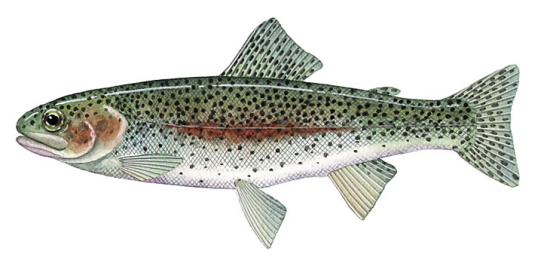
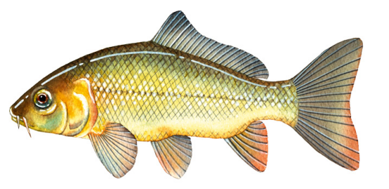

Berwick Springs Lake is a picturesque man-made lake situated in Narre Warren South, a southeastern suburb of Melbourne. The lake is surrounded by well-maintained parklands, walking and cycling paths, playgrounds, and picnic areas, making it a popular spot for families and outdoor enthusiasts. The area is also home to diverse birdlife and offers a tranquil setting for relaxation and recreation.
Fishing at Berwick Springs Lake
Fishing at Berwick Springs Lake is permitted and caters to anglers of all skill levels. The lake is regularly stocked with rainbow trout, especially during school holidays, as part of the Victorian Government's Go Fishing Victoria initiative. Other species commonly found in the lake include redfin, carp. Anglers can fish from the shoreline, and the lake's calm waters make it suitable for both bait and lure fishing. A valid Victorian recreational fishing licence is required, and all local fishing regulations, including size and bag limits, must be observed.
The fish species commonly found in Berwick springs lake include:
Redfin Perch: A popular target species, especially in the cooler months. They respond well to soft plastics and small spinners.
Rainbow Trout: Occasionally found in cooler stretches, especially closer to tributaries like the Plenty River.
Common Carp: Although introduced and considered a pest, they are abundant and put up a strong fight, making them appealing to some recreational fishers.Victoria has strict regulations regarding carp fishing. Due to the severe environmental damage carp cause to local waterways, all carp caught must not be returned to the water.Carp are omnivorous fish and can be caught with almost any type of bait. Naturally, non-artificial baits tend to be significantly more effective than lures. This principle generally applies across all types of waterways.
Fishing in this area is more about enjoying the serenity of the bushland and spotting wildlife than sheer volume of catches. Best results often come during early morning or late afternoon, particularly in spring and autumn. Local regulations require a Victorian Recreational Fishing Licence, and catch limits must be followed.